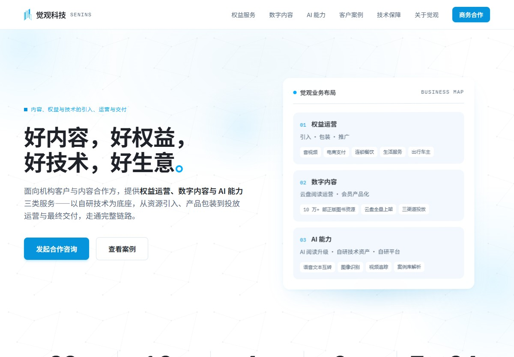
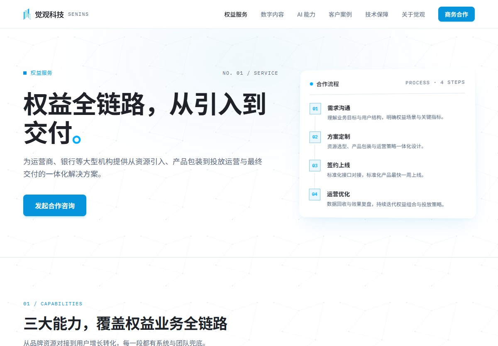
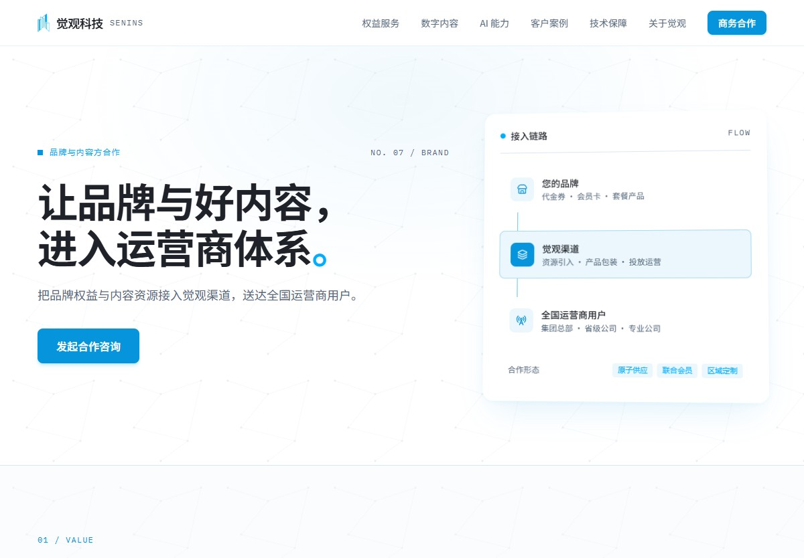
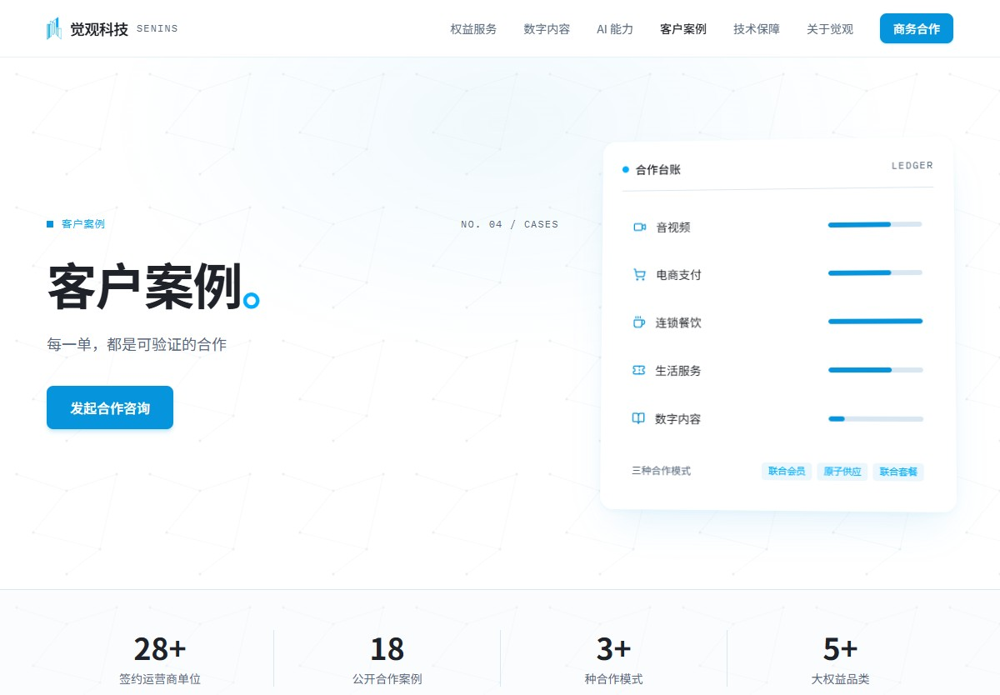
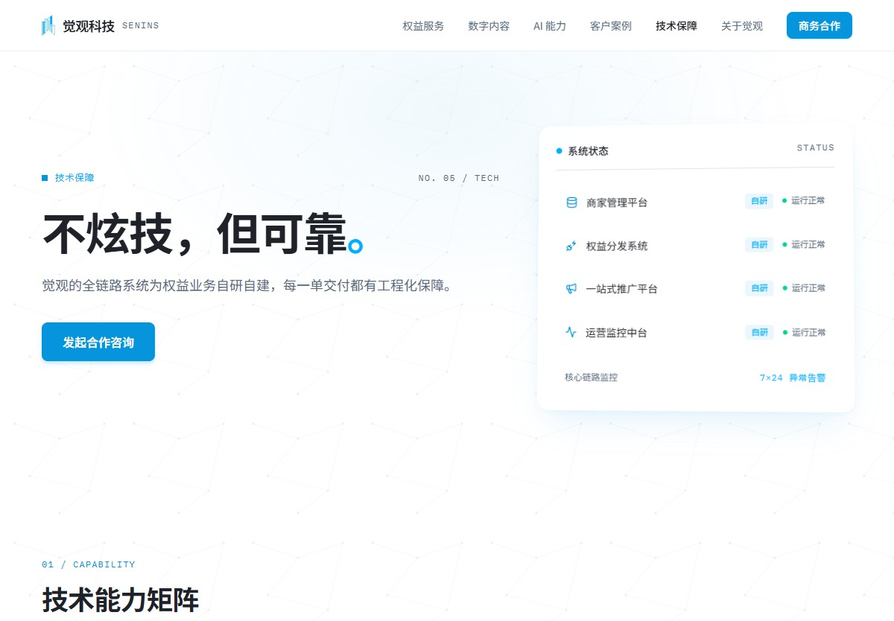

PROJECT STORY / 项目完整阅读
我把一家公司的业务，做成了一个能上线的产品
这个项目不是一次页面美化，而是一条完整的链路：先把觉观科技的业务结构读懂，再判断访客应该按什么顺序理解它，最后把这些判断变成八个能访问的页面。信息架构、组件设计、页面实现与内容组织，都由我一人用 Vibe Coding 推进完成；同事只提过少量建议，没有替我写过代码。
第 01 章
先看懂这家公司做什么
做官网的第一件事不是排版，是把业务读通。觉观科技对外提供权益运营、数字内容与 AI 能力三类服务，我需要先弄清楚这三块各自解决什么问题、彼此之间是什么关系、哪些数字可以公开说——否则页面结构只会是一堆好看的空容器。
读完之后的判断是：这是一家向运营商和企业客户交付内容与权益的公司，主张是「好内容，好权益，好技术，好生意」。所以首页第一屏要做的不是介绍领导层，而是把业务范围说清楚，并给出五条可核对的事实：签约运营商单位 28+、广告投放平台 20+、大权益品类 5+、正版图书资源 10 万+、专属客服 7×24。规模先讲清楚，后面每个业务页才有解释的对象。
我把公司的三条业务线拆开看。权益服务是主线，引入、包装、推广三段流程，配五类权益生态；数字内容是第二条线，从图书引入上架、云盘内运营到会员产品化，有自己完整路径；AI 能力则必须区分状态——已上线的语音朗读、全书速读、伴读问答，已沉淀为著作权的自研资产，以及正在推进的研发合作。把这三种状态分开写，是为了不用模糊表述覆盖真实进度。
还有一个判断我放在这里：公司主体、资质与知识产权不放在首页。访客在还没决定是否合作时不会先查营业执照，而准备签约时才需要。页面顺序本身，就是一次关于访客时机的判断。

官网首页主视觉、业务板块、数据区与双角色入口在同一屏内完成交代。
第 02 章
再决定谁先看到什么
业务读懂之后，第二个问题是访客带着什么问题进来。觉观科技的客户有两类：机构方要采购权益能力，品牌方要把自己的产品送进运营商渠道。这两类人关心的东西完全不同——机构方想知道能力、案例和交付保障，品牌方想知道渠道能带来什么、怎么接入、以什么形态合作。
所以首页给了两个明确身份：「我是机构方」和「我是品牌方」。我没有让访客自己猜该点哪里，而是做了分流。第三个入口是导航右侧的「商务合作」按钮，指向一个不占主导航的转化页——把它单独拆出来，既不打断主导航的阅读逻辑，又让供给侧有明确落点。
信任是分层交付的，这决定了页面的先后顺序。案例和技术保障在中期：案例页给出合作台账、模式分类（联合会员、原子供应、联合套餐）与覆盖地图，把「服务过很多客户」换成可指向的记录；技术页给出全链路自研系统、标准化交付与安全合规，回答「凭什么可靠」。资质放在最后，因为它是决策后期的证据，不是浏览早期的吸引力。
品牌与内容方合作页我设计成一条三段链路：您的品牌（代金券、会员卡、套餐产品）→ 觉观渠道（资源引入、产品包装、投放运营）→ 全国运营商用户（集团总部、省城公司、专业公司），下方给出三种合作形态。把「合作」从一个按钮，变成一条可以被读懂的流程。

权益服务三段流程与五类权益生态，说明业务链路。

品牌与内容方合作把「合作」表达成一条可以读懂的接入链路。

客户案例合作台账与品类分布，让「服务过谁」有具体指向。

技术保障用系统、交付与合规回答可靠性问题。
第 03 章
最后自己把它做出来
前两步是判断。这一步是执行——这个官网从设计到上线由我一人完成，同事只提过少量建议，实现部分没有交给别人。
技术选型上，这是一个 Astro 静态站点。公司的导航、公司信息、案例、资质与地图数据集中在配置与数据文件里，导航、页脚、联系模块与示意界面作为共享组件复用，八个页面全部使用静态路由。构建结果可以直接部署，也保留无 JavaScript 时的基础内容阅读。这套选择背后是我的判断：官网的更新频率低、访问量集中、需要一个能长期自己维护的站点，静态生成比 CMS 更合适。
实现方式是 Vibe Coding。我不写每一行代码，而是通过自然语言描述把结构、组件和页面交出去，再通过对话持续修正。这件事真正的门槛不在打字速度，而在前面两步的质量——如果业务没读懂，我描述不出正确的页面结构；如果信息架构是拼凑的，对话式开发只会把拼凑做得更快更精致。AI 是放大器，它放大的是判断本身。
这页本身也是同一个方法的产物：画布、文件夹、阅读弹层和文章区，都由我通过对话迭代出来，替换掉最初几版并不好用的交互，直到它符合我给定的阅读节奏。
几处配置细节也留着取舍。站点配置里有一项「信息披露口径」被设为泛化：品牌名泛指化、省公司名不点名、案例资费隐去，待授权与引用事项确认后再切到全量呈现。这说明对外表达的尺度可以在代码层集中调整，而不是散落在各个页面里。同一个配置里，ICP 备案号仍是一处待填项，信任行中的四项资质也标注着需要对照证书台账核实——我把它们写成可核销的清单，而不是藏起来。
查看当前线上官网（新窗口） ↗
文字目录
可以从业务理解、表达设计或实现方式三个方向进入。每篇都是这个项目里可以具体指认的一部分。
先讲清这家公司做什么
首页是整站目录，也是业务范围的第一次说明。主视觉给出主张「好内容，好权益，好技术，好生意」，以及一句面向机构客户与内容合作方的服务说明：提供权益运营、数字内容与 AI 能力三类服务，以自研技术为底座走通从资源引入到最终交付的链路。
随后是五条可核对的事实：签约运营商单位 28+、广告投放平台 20+、大权益品类 5+、正版图书资源 10 万+、专属客服 7×24。这些数字集中在首页，而不是分散到各业务页，访客在第一屏就能形成规模判断。
板块编号与主导航一一对应：权益服务、数字内容、AI 能力、客户案例、技术保障，加上关于觉观。这种对应让首页同时具备两种作用——说明公司做什么，以及指出站内其他页面各自回答什么。
官网首页取自本地构建结果的真实页面。
来源：官网首页源码与本地构建页面。
权益从引入到交付
权益服务页回答「权益资源怎样变成可长期运营的产品」。我把这件事拆成引入、包装、推广三段：引入从头部品牌与内容平台获取资源并按渠道与用户需求扩充品类；包装针对品牌特征与消费场景设计可直接上架的会员与券包产品；推广则分线上精准触达与线下场景落地两部分，并要求投放过程数据化、可追溯。
三段流程之后是五类权益生态：音视频、电商支付、连锁餐饮、生活服务与出行车主，每一类都同时列出资源形态与产品形态，例如音视频对应视频会员月卡与叠加权益包，电商支付对应支付红包与商城券包。资源与产品分列，访客能同时看到「有什么」和「以什么形式交付」。
权益服务三段流程与五类权益生态。
来源：权益服务页源码与本地构建页面；流程与品类结构为页面既有内容。
把正版内容运营成生意
数字内容页是第二条业务线，标题是「把正版内容运营成长期生意」。它同样给出三段：内容引入与上架（从出版方引入正版图书并取得授权，完成整理分类与全量上架）、云盘内内容运营（以机构账号在云盘内发布与维护阅读内容，承接用户咨询）、会员产品化（围绕阅读场景整合打包，输出可售卖、可续订的会员产品）。
首页在业务地图里把它写成「云盘阅读运营 · 会员产品化」，并标注 10 万+ 部正版图书资源、云盘全量上架与三渠道投放。短剧内容则单列为权益、会员增值与内容分发三种用途，和图书阅读是并列而非从属关系。
「全量上架」与「可续订」这类表述来自页面本身，我在页面上保留原始口径，不据此推断实际的运营规模与销售结果。
来源：数字内容页源码；内容结构与资源表述取自页面既有定义。
区分已上线与在建能力
AI 页最容易滑向模糊表达，所以我把能力分成三层写。已经上线的阅读场景能力有三项：智能语音朗读、AI 全书速读、AI 伴读问答，都用一句话说明用户能做什么。自研 AI 技术资产列了语音文本互转、图像识别应用、视频图像动态追踪与案例库解析，并说明已沉淀为软件著作权。
第三层是自研平台工程能力：创作者分层与激励、内容分级审核、资金对账与运营后台，可迁移复用到新的内容业务。这一层的价值不在 AI 本身，而在于换一条业务线时这些系统还能被复用。
另外一层是研发合作：与市场头部阅读类产品共同投入，推动从数字阅读走向智能阅读。区分「已上线」「已沉淀」「正在合作」三种状态，是这一页最值得留意的地方。
来源：AI 能力页源码；已上线能力与自研资产清单为页面既有内容。
同一套内容，两种进入方式
机构方与品牌方关心的问题不同，首页因此给出「我是机构方」与「我是品牌方」两个入口，让访客先识别身份再进入对应路径，而不是自己猜该点哪里。
机构方关心能力、案例与交付保障，对应权益服务、客户案例与技术保障；品牌方关心渠道价值、产品包装与接入方式，对应独立的合作转化页。这条分流是整个站点结构的起点——它决定了哪些内容放主导航、哪些内容放转化页。
来源：首页双角色入口与各页导航关系；为基于页面结构的整理。
给供给侧一条独立通路
合作转化页不占主导航，这是我的一个刻意选择：它服务供给侧，但不该打断主导航的阅读逻辑。页面把合作写成一条三段链路——您的品牌（代金券、会员卡、套餐产品）→ 觉观渠道（资源引入、产品包装、投放运营）→ 全国运营商用户（集团总部、省城公司、专业公司），并在下方给出三种合作形态：原子供应、联合会员、区域定制。
这条链路把「合作」从一个按钮，变成一个可以被读懂的流程，也给首页的「我是品牌方」入口提供了落点。
品牌与内容方合作三段接入链路与三种合作形态。
来源：品牌与内容方合作页源码与本地构建页面。
用合作网络说明服务范围
客户案例页的标题只有四个字「客户案例。」，副标题是「每一单，都是可验证的合作」。我把抽象的「服务了很多客户」换成一张合作台账：音视频、电商支付、连锁餐饮、生活服务、数字内容五类，各自标注合作进度；下方给出三种合作模式——联合会员、原子供应、联合套餐。
首页同时标注 28+ 签约运营商单位与 18 单公开合作案例，并说明与集团总部、省级公司及多家专业公司签订正式合作协议。这些表述在本页与首页之间保持一致，而不是在不同页面出现不同口径。
页面另有一处信息披露口径：品牌名泛指化、省公司名不点名、案例资费隐去，待授权与引用事项确认后再切到全量呈现。这条规则写在站点配置里，作用范围是全站。
客户案例合作台账与品类分布。
来源：客户案例页源码与本地构建页面；案例台账与数字表述为页面既有内容。
不炫技，但可靠
技术保障页回答的是「凭什么可靠」。页面给出全链路自研系统、标准化交付（标准化接口对接，新权益产品最快一周上线）与安全合规三条线，落点是等保与 ISO/IEC 27001 体系认证。
这一页我刻意写得克制。没有技术架构图，也没有自夸式的性能描述——客户在评估技术能力时，想确认的是「出了问题谁负责、多久能上线、合不合规」，而不是「用了什么框架」。
技术保障用可检查的交付方式替代形容词。
来源：技术保障页源码与本地构建页面；交付与合规表述为页面既有内容。
资质是可信度的底座
关于觉观页最后落到主体信息：经营许可、体系认证与知识产权。这样一组内容放在最后，是因为它属于决策后期需要的证据，而不是浏览早期的吸引力。
我把公司主体、资质与知识产权集中在这一个页面，而不是分散到各业务页末尾——这样访客在准备核验时有一个地方可以看完，也避免每个业务页都挂上一段资质清单打断阅读。
来源：关于觉观页源码；主体与资质信息取自页面既有内容。
从判断到可运行产品
这个官网是我独立完成的：信息架构、页面设计、内容组织，以及全部实现与部署。同事只提过少量建议，从结构到代码没有交给别人执行。
技术选型上是一个 Astro 静态站点。公司的导航、公司信息、案例、资质与地图数据集中在配置与数据文件里，导航、页脚、联系模块与示意界面作为共享组件复用，八个页面全部使用静态路由。构建结果可直接部署，也保留无 JavaScript 时的基础内容阅读。
实现方式是 Vibe Coding——通过自然语言描述把结构、组件和页面交出去，再通过对话持续修正。真正的门槛不在打字速度，而在业务理解与信息架构的质量：业务没读懂，就描述不出正确的页面结构；结构是拼凑的，对话式开发只会把拼凑做得更快更精致。
这页本身也是同一个方法的产物：画布、文件夹、阅读弹层与文章区，都由我通过对话迭代出来，替换掉最初几版并不好用的交互，直到它符合我给定的阅读节奏。
来源：官网 Astro 版本源码与本地构建结果；实现方式由本项目作者说明。